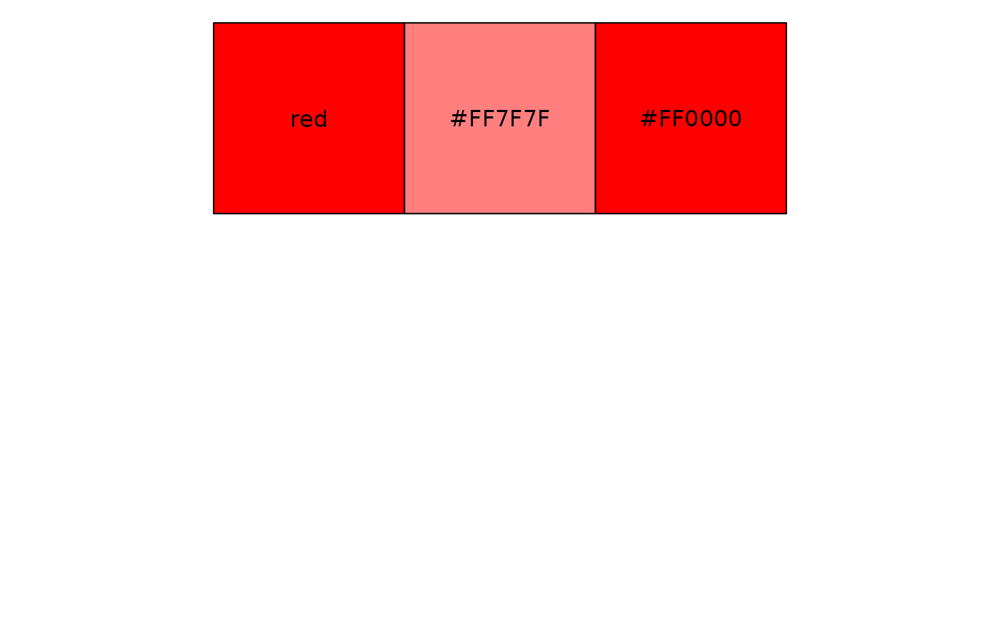
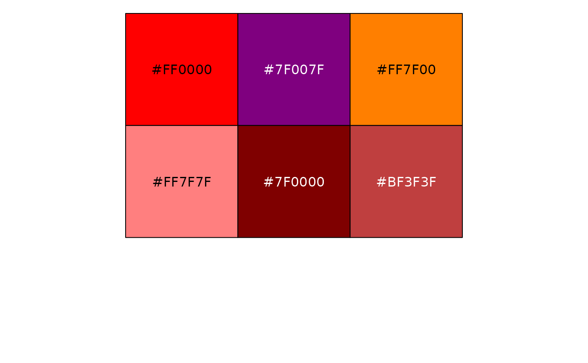

These functions translate colors between their original RGB values and their
RGB values after alpha blending with a background color. before_opacity
calculates the original color given the blended color, while after_opacity
calculates the blended color given the original color.
Value
before_opacity: The original color before alpha blending, as a hex code.after_opacity: The blended color after alpha blending, as a hex code.
Examples
red <- "red"
red_50 <- after_opacity(red, 0.5)
red_back <- before_opacity(red_50, 0.5)
scales::show_col(c(red, red_50, red_back), ncol = 3)

color_blends <- sapply(
c("red", "blue", "yellow", "white", "black", "gray50"),
after_opacity,
color = "red",
alpha = 0.5
)
scales::show_col(color_blends)
